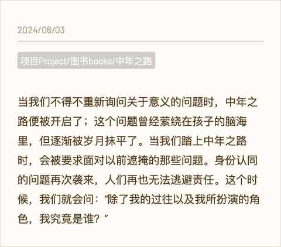
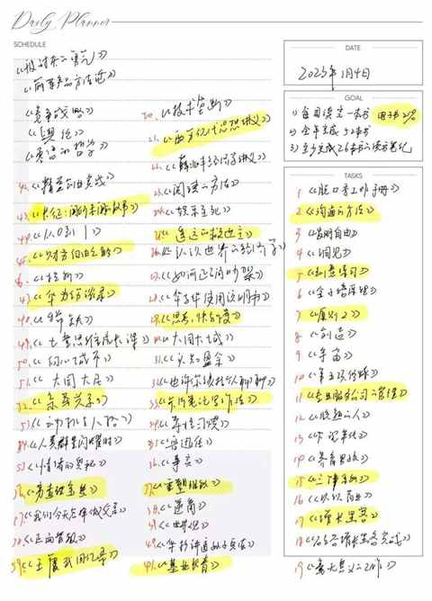
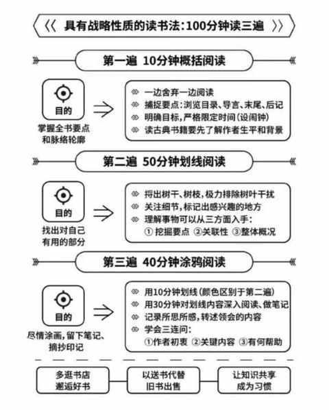
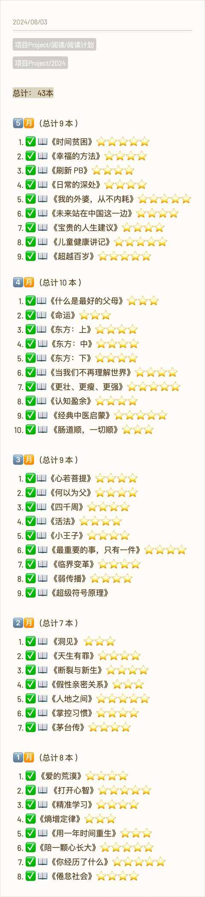
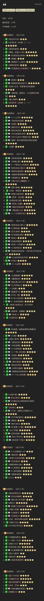

当看完 170 本书之后，阅读成为习惯
一、为什么阅读？
和最近几年所处的状态息息相关， 想从书中寻找答案！
寻找意义，要直面问题，不能逃避，顺而延展到哲学的三大终极问题：我是谁？从哪里来？到哪里去？
最近 看 的一本书是《中年之路》，其中就有相关的表述：

这种感觉最明显的是 2022 年的年12 月，当时每天都能刷到各式各样的年终总结、年终复盘、2023 年的计划、目标等等。
看了又看，想了又想，最终也制定了自己的2023 年的年度目标，其中就有一项是读完 52 本书。

由此阅读计划开启，阅读的书目并没有严格按计划来，主打随阅读的内容和当时的心情变化。
二、读哪些类型的内容？
读脑科学方面的内容能更好的理解大脑的工作逻辑，虽然现在人类对于大脑的了解依然十分有限，但了解多一点点并没有任何坏处。
心理学的内容实在是现代人的必备，从心理学方面的自媒体博主越来越多就能深切到的感受到，大家日渐不稳定的情绪需要被治愈。
商业与营销与消费主义息息相关，姑且相信多读一些这方面的内容就愈能在想逃离消费主义陷阱的时候能避开，不过 618 和双 11 这种实在是太难避开，理性点投入更好。
小说与文学类作品，不可或缺，好的作品引人深思，充满力量。
育儿类书籍不仅能让新手父母从中获得育儿知识，也能更好地认识自己，可以说是读了多本之后的意外收获。
三、 推荐的 阅读方法是哪种？
- 如果时间充足
前期以完整看完一本书为主，要有耐心去培养阅读感觉
跳过序言的部分，从第一章完整读到最后一章
后期可针对性的优先从目录中选取感兴趣的章节去优先阅读，再根据阅读反馈决定是否继续阅读其他章节
2. 如果时间有限
可以试试 100 分钟阅读法

四、如何开始阅读？
1. 先从感兴趣的内容开始
例如： 比较经典的网文、小说、 散文集等等，在前期阅读这些能大大地降低开始的难度。
2. 预留一个阅读时间段
15 分钟或者 30 分钟都行，在这个时间里面只看书，不看其他内容。
3. 听书也是一个选择
现在各种 ai 生成的声音都越来越没有违和感，可以自行选择合适的声音
4. 保持良好的节奏
例如：看完或听完一本篇幅比较长的书之后，下一本可以是比较短的，看完一本深度书籍之后，换一本轻松些的。
以下为 170 本的完整书目：

